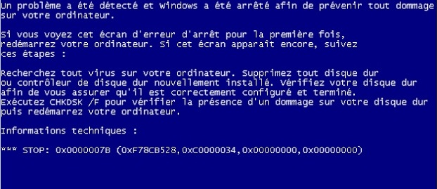

CV
Resume
Développeur DATA et Business intelligence sur des projets décisionnels. j’ai une formation universitaire de technologie informatique de l’université de Toulouse(Bac+2)Missions :analyse métier, réalisation de SFD, intégrer des évolutions dans une solution ETL, Développement de nouvelles fonctionnalités, extractions en langage objets SQL, réalisation de rapports avec SSRS, Power BI, migration de données avec SSIS, Talend, Data fixing
EXPERIENCES
- 01/2023 - 06/2023
Développeur Data (BORDEAUX)
ministère de l’écologie par ESN Audensiel en CDI
 Développeur ETL
(Extract, transform, load) dans un projet
de contrôles d'opération de rénovations et d'isolations de
logement financé par l'état Français
Développeur ETL
(Extract, transform, load) dans un projet
de contrôles d'opération de rénovations et d'isolations de
logement financé par l'état Français
les
technologies: Talend, PostgreSQL, java, Sql et SAP Business Object pour les
rapports, Openproject, TAC
Taches : création et évolution de
jobs, rapport, mise en place de script, rédaction de user story, analyse technique
- 06/2022 - 12/2022 : Data analyste
(BORDEAUX)
Caisse des dépôts par ESN Audensiel en CDI
Data Analyste
au sein de la direction des système
d'information
de la caisse des dépôts pour réaliser des extractions sur
une
application de saisie de semestre de retraite qui s'appel SRV
les technologies: VBA,
ACCESS, Excel, SQL, BO,JIRA
Taches : réalisations et mises à jour de rapport,
optimisations de
requêtes, automatisation des taches par Access
- 10/2018 - 06/2022 : Développeur BI (BORDEAUX) Mphasis Wyde / MFP Prévoyance / CSF assurance
10/2018 au
09/2021 Développeur Objet et ETL dans
un projet
d'assurance vie (MFP)
10/2021 au 05/2022  développeur ETL
dans un projet d'assurance (CSF) et dans l'équipe produit
(Wynsure)
développeur ETL
dans un projet d'assurance (CSF) et dans l'équipe produit
(Wynsure)
Technologies: MSSQL, Transact-SQL, SSIS, SSRS, Jenkins,
Mantis, Power BI,Talend, SQL
Taches: extraction en langage objet ,
extraction Transact-SQL, job et patch avec SSIS, rapport SSRS, intégration de
nouvelles, fonctionnalités(loi PASRAU, loi eckert), correction de d'anomalie, ajout
de contrôle, restaure de base de données, optimisation de requêtes,
jointures, Tables
- 06/2009 - 09/2011 : Technicien support
 dans le cadre de
financement des mes études d'architecture,
j'ai
travaillé dans une boutique de vente et réparation de
matériel
informatique
Taches et outils:
Récupérations des systèmes d'exploitation
(Boot Endommagé MBR ou
table de partitions) réinstallation De
systèmes d'exploitation,
récupération de données Perdues
(TESTDISK -PHOTOREC) changement de RAM,
processeur,
alimentation
FORMATIONS ET CERTIFICATION
PL-300: Analyste Données Microsoft Power BI
formation par Udemy et Microsoft learn
Formation accélérer JAVA jee, SPRING-BOOT, ANGULAR
après la
fin des études de l'université
Java, C, ADA, Python, PLSQL, Java Script, HTML, CSS, TYPE
SCRIPT,
VBA, Git, Access, jira, mantis, open project, sql server, Pgadmin
Formation universitaire de technologie informatique en cours du soir sur 3 ans en parallèle des jobs alimentaires
Service de Sécurité Incendie et d’Assistance aux Personnes
CQP APS : Certificat Agent de Prévention et de
Sécurité
SST : sauveteur secouriste du
travail
HABILITATION ELECTRIQUE : risque électrique